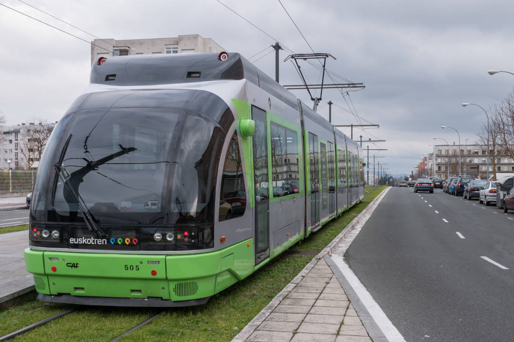
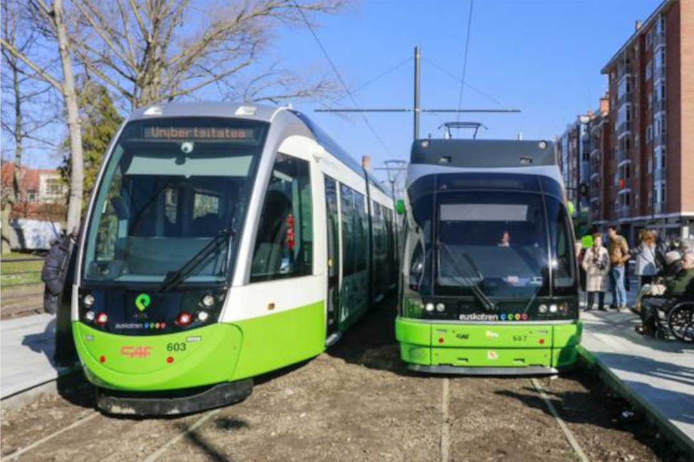
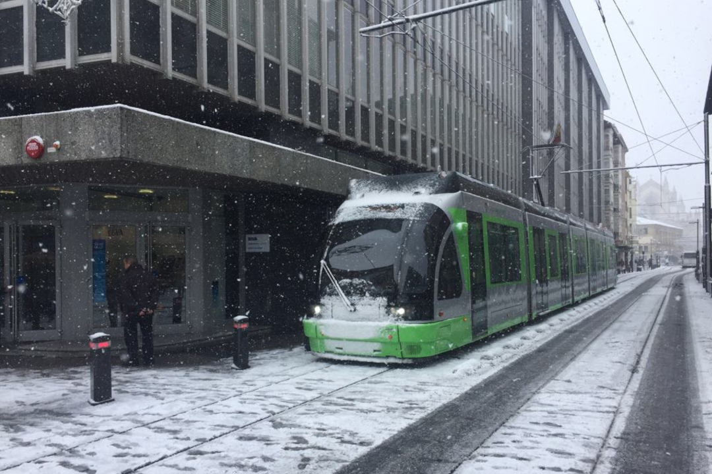
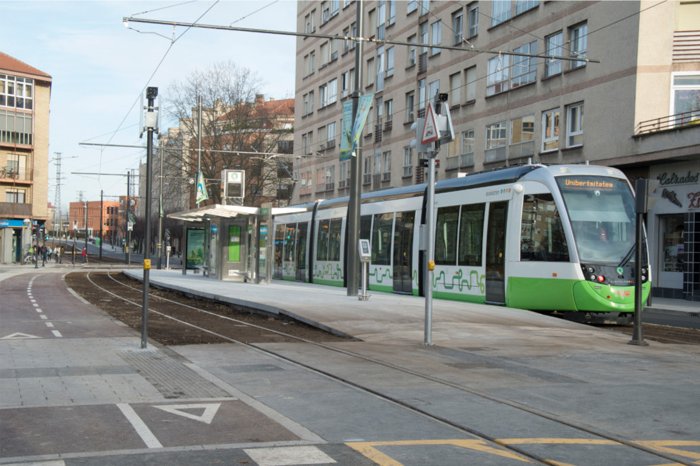
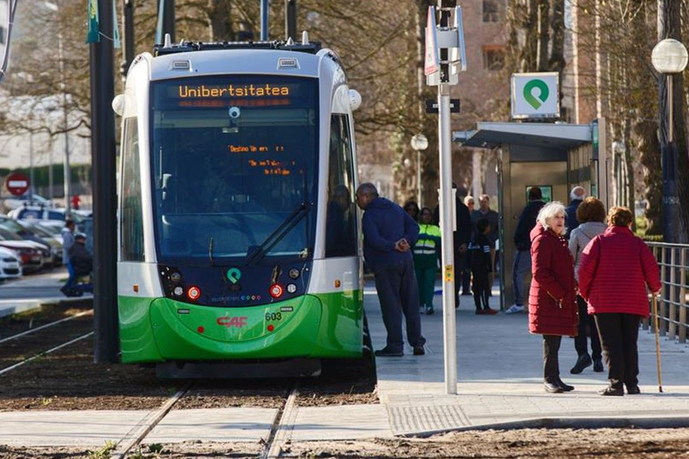
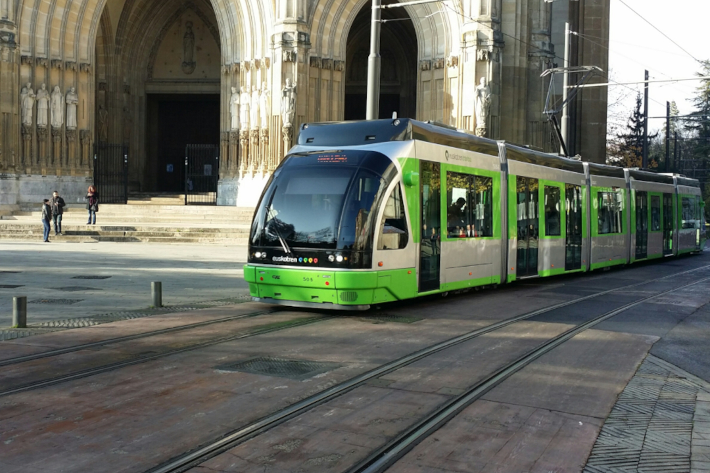
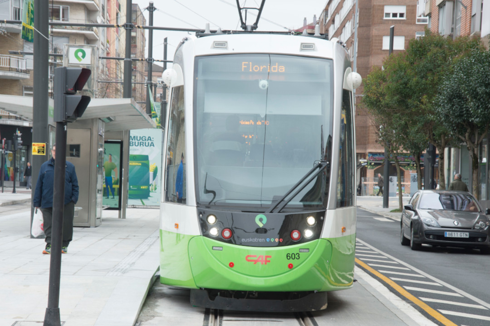
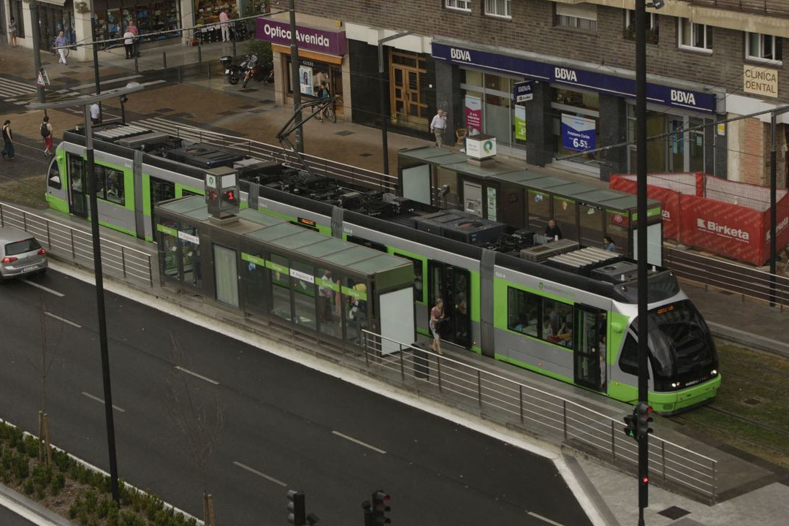
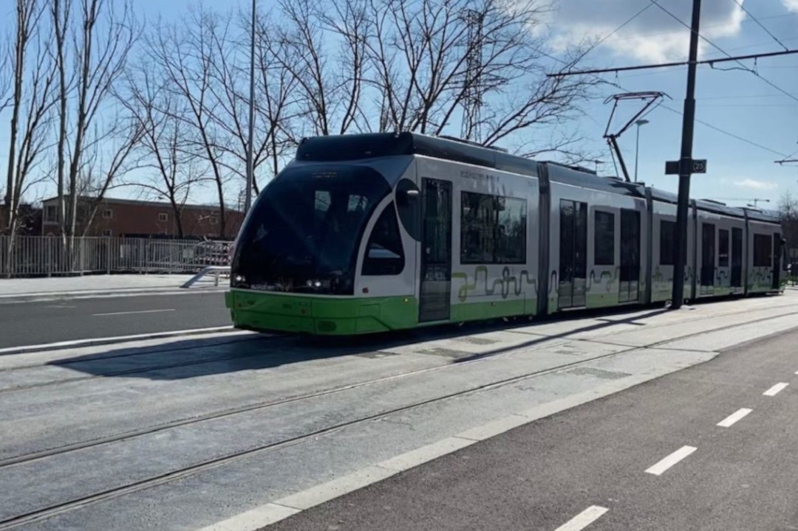

Primera Parada
Ibaiondo.Dirección: Landaberde Kalea, 4-10 01010 Vitoria-Gasteiz
Estadísticas de esta parada

Segunda Parada
Landaberde.Dirección: Landaberde Kalea, 15-29 01010 Vitoria-Gasteiz
Estadísticas de esta parada

Tercera Parada
Lakuabizkarra.Dirección: Wellingtongo Dukea Kalea, 27 01010 Vitoria-Gasteiz
Estadísticas de esta parada

Cuarta Parada
Wellington.Dirección: Wellingtongo Dukea Kalea, 23 01010 Vitoria-Gasteiz
Estadísticas de esta parada

Quinta Parada
Txagorritxu.Dirección: Ronda de Circunvalación, 2-20 01010 Vitoria-Gasteiz
Estadísticas de esta parada

Sexta Parada
Euskal Herria.Dirección: Euskal Herria Bulebarra 01010 Vitoria-Gasteiz
Estadísticas de esta parada

Séptima Parada
Honduras.Dirección: Honduras Kalea, 5-7 01009 Vitoria-Gasteiz
Estadísticas de esta parada

Octava Parada
Europa.Dirección: Gasteiz Hiribidea, 74 01012 Vitoria-Gasteiz
Estadísticas de esta parada

Novena Parada
Sancho el Sabio.Dirección: Antso Jakitunaren Kalea 01008 Vitoria-Gasteiz
Estadísticas de esta parada